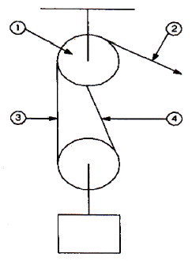
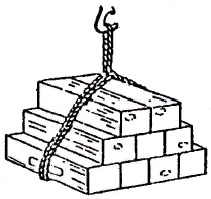

양화장치운전기능사 (2016-07-10 기출문제)
1과목: 임의구분
1. 산화물작업 에 사용되는 굴삭기 전부장치의 주요 구성 요소가 아닌 것은?
- 붐
- 암
- 버켓
- 트랙 프레임
(정답률: 78%)

2. 주행 크레인에서 작업 종료 후 운전실 위치는?
- 붐의 끝 부분과 일치시킨다.
- 기계실 뒤쪽과 일치시 킨다.
- 승강용 통로와 일치시 킨다.
- 선박 위 작업장의 위치와 일치시킨다.
(정답률: 76%)
3. 데릭 포스트에 대한 설명 중 틀린 것은?
- 강판제로 제작한다.
- 일명 마스트라고도 한다.
- 보통 단면이 직육면체 모형 이다.
- 갑판상의 조명용 카고 라이트도 설치 한다.
(정답률: 76%)
4. 양화장치 운전전 운전자가 해야 할 사항은?
- 카고 와이 어를 풀어놓는다.
- 무부하 운전을 5∼ 6회 이상 해본다.
- 붐의 각도를 최대한 낮춘다.
- 안전사항은 본선 감독자에게 맡긴다.
(정답률: 80%)
5. 유니언 퍼쳐스 데릭에 비해 싱글데릭의 장점이 아닌 것은?
- 양현 하역이 가능하다.
- 중량물, 위험화물 및 취약화물 하역에 적합하다.
- 하역 속도가 빠르다.
- 무리한 동하중이 걸리지 않아 원활하고 안전하게 하역 할 수 있다.
(정답률: 71%)
6. 이동식 주행 크레인과 컨테이너 크레인의 레일클램프에서 레일과 접지 하는 곳은?
- 실린더
- 클램프
- 패드
- 롤러
(정답률: 77%)
7. 유압 윈치의 장점이 아닌 것은?
- 관성력이 크다.
- 작동이 신속·정확하다.
- 출력에 비하여 소형 ·경량이다.
- 무단변속이 용이 하다.
(정답률: 69%)
8. 유조선에서 증기윈치를 사용하는 주된 이유는?
- 원격 조종이 용이하다.
- 시동준비가 간단하다.
- 스파크에 의한 화재를 방지 한다.
- 누유의 우려가 없다.
(정답률: 83%)
9. 유니언 퍼쳐스식 데릭 신호의 감아올리기 기본자세 중 양팔 어깨의 높이는?
- 양팔을 머리 위로
- 양팔을 어깨 높이 또는 그보다 약간 높은 위치
- 양팔을 허리 높이 또는 그보다 약간 높은 위치
- 한쪽 팔은 등 뒤로하고 나머지 한 팔은 어깨 높이로
(정답률: 77%)
10. 선상 크레인에 이용되는 리미트 스위치의 설치 목적은?
- 충돌방지 등 작업 의 안전을 위하여
- 화물을 신속히 이동하기 위하여
- 운전을 편하게 하기 위하여
- 화물의 무게를 측정 하기 위하여
(정답률: 82%)
11. 하역작업 중의 신호에 대한 설명 중 틀린 것은?
- 신호는 두 사람이 하면 더욱 안전하다.
- 신호동작은 크고 명확하게 하여야 한다.
- 매달린 화물이 작업자의 머리위로 통과하지 않도록 한다.
- 내려놓을 장소를 지시하고 유도한다.
(정답률: 80%)
12. 윈치의 구비 요건이 아닌 것은?
- 감아올리는 능력이 있을 것
- 안전상 취급이 용이할 것
- 제동이 잘 될 것
- 가능한 한 최대 회전속도를 유지 할 것
(정답률: 78%)
13. 지브 크레인의 신호 중 오른손의 손바닥을 펴서: 사용하는 경 우는?
- 카고 와이어 감아 올리기/내리기
- 붐 또는 지브의 기복
- 매단 화물의 수평 이동
- 붐 또는 지브의 선회
(정답률: 80%)
14. 양화장치 의장의 구성 품이 아닌 것은?
- 샤클
- 태클
- 블록
- 피스톤
(정답률: 73%)
15. 횡행장치에서 브레이크를 사용하는 목적이 아닌 것은?
- 속도가 빠를 때
- 정확한 정지가 요구될 때
- 옥외에서 바람에 밀릴 위험이 있을 때
- 타이다운장치가 없을 때
(정답률: 68%)
16. 혜비 데릭 의장의 특징 이라고 볼 수 없는 것은?
- 카고 폴은 배력 6 ∼ 8배 의 태클을 사용한다.
- 각 윈치의 기어는 저속기어로 바꿀 수 있게 되어 있다.
- 카고 훅에 가이를 부착하여 화물의 스윙을 제한할 수 있다.
- 포스트, 붐, 구즈넥 등의 강토는 일반 데릭과 거의 같다.
(정답률: 66%)
17. 붐을 세우거나 내리는데 사용되는 와이어로프는?
- 가이
- 구즈넥
- 스링
- 토핑 리프트
(정답률: 77%)
18. 전기윈치 조작에 대한 설명 중 틀린 것은?
- 조종 핸들을 1단에서 시작하여 순서에 따라 2단, 3단 순서로 조작한다.
- 작업 중정전시에는 조종핸들을 스톱 위치로 되돌려 놓는다.
- 화물을 서서히 감아올릴 필요가 있을 때는 1단을 사용한다.
- 작업시 작전 반드시 저항기 및 모터의 냉각용공기 출입구를 닫는다.
(정답률: 72%)
19. 카고 폴 앵글에 대한 설명 중 틀린 것은?
- 2개 의 카고 폴이 만드는 각이다.
- 폴 앵글이 1”도 보다 커지지 않도록 하여야 한다.
- 폴 앵글이 커질수록 카고 폴에 작용하는 힘은 작아진다.
- 매다는 화물의 중량과 카고 폴에 걸리는 힘은 폴앵 글과 함수관계가 있다.
(정답률: 54%)
20. 컨테이너 야드에서 사용되늠 하역 장비는?
- 쉽 테이너
- 트 랜스퍼크레인
- 스태커/리 클레 이머
- 엔진 그래브버 켓
(정답률: 74%)
2과목: 임의구분
21. 제한하중에 관한 설명 으로 틀린 것은?
- 그 구조나 재료에 안전하게 사용할 수 있는 최대의 하중이다.
- 제한하중이 10톤 이하인 것은 통상 앙각 15°에서 하중시험이 행하여진다.
- 지브 크레인은 지브를 세워서 하중 시험을 한다.
- SWL 8T 15˚의 기호는 앙각 15°에서 제한하중이 8톤 이라는 뜻이다.
(정답률: 73%)
22. 선박이 항해 중 선박의 항로를 설정하고 위치를 확인하는 곳은?
- 엔진 룸
- 브릿지
- 메인 데크
- 푸프 데크
(정답률: 71%)
23. 선상 지브 크레인의 주 동작을 나열 한 것 중 틀린 것은?
- 지브 기복
- 선회
- 호이스트
- 주행
(정답률: 70%)
24. 현장에서 양화 작업 과 관련이 없는 사 람은?
- 항만 근로자
- 포맨
- 일등항해사
- 송화주
(정답률: 77%)
25. 싱글 데릭 방식 중 톰슨 하역 방식에 대한 설명으로 틀린 것은?
- 활현 방식 이 라고도 한다.
- 데릭 붐 끝에 삼각 모양의 구조물을 가지고 있다.
- 2 토핑 방식이다.
- 가이리스 방식이다.
(정답률: 59%)
26. 하역 장치 중 제한 하중이 30톤인 지브크레인의 하중 시험은 얼마로 해야 하는가?
- 30톤
- 33톤
- 35톤
- 37.5톤
(정답률: 67%)
27. 태클의 그림에서 그 명칭이 잘못 짝지워진 것은?

- 고정블록
- 당김줄
- 이동줄
- 리깅줄
(정답률: 72%)
28. 와이어프로 하역 할 경우 화물을 보호하기 가장 거리가 먼 것은?
- 화물 모서리에 고무판 등의 받침물을 대고 스링을 건다.
- 피복된 와이어로프를 사용한다.
- 벨트 스링을 사옹한다.
- 1줄의 와이어로프를 사용한다.
(정답률: 68%)
29. 와이어로프의 굵기 측정방법을 설명한 것 중 틀린 것은?
- 외접원의 직경을 미리미터(rnln)로 표시한다.
- 외접원의 원주를 미리미터(mm)로 표시한다.
- 직경은 로프의 끝에서 1.5m 이상 떨어진 임의의 점 2개소 이상을 측정하여 그 평균치를 구한다.
- 신품의 로프는 실제 측정한 직경이 공칭경보다 약간 굵다.
(정답률: 70%)
30. 블록의 구성부품이 아닌 것은?
- 시이브
- 샤클
- 셀
- 스트롭
(정답률: 67%)
31. 와이어로프 취급법에 대한 설명 으로 틀린 것은?
- 절단하중과 안전하중을 고려하여 사용한다.
- 마찰이 많은 곳에는 캔버스를 감아서 사용한다.
- 볼라두는 와이어로프 직경의 15배 이상을 사용한다.
- 비트에 맬 때에는 미끄러지지 않도록 스플라이싱을 한다.
(정답률: 50%)
32. 마닐라 로프에 스트랜드의 꼬임이 많을 때의 설명으로 맞는 것은?
- 유연성이 양호하다.
- 탄력이 크다.
- 습기의 침투가 잘 된다.
- 취급하기가 용이하다.
(정답률: 60%)
33. 훅을 사용 할 수 있는 경우는?
- 생크부의 회전이 원활하지 않은 것
- 마모자국 깊이가 1mm 인 것
- 훅의 구부러진 각이 3도 이상 벌어진 것
- 균열이 있는 것
(정답률: 73%)
34. 컨테이너를 스링훅으로 걸 때 틀린 것은?
- 컨테이너의 단위 중량에 적절한 안전하중을 가진 훅을 사용한다.
- 훅은 컨테이너의 코너 피팅에 걸면 안 된다.
- 걸림 각도를 충분히 고려하여야 한다.
- 컨테이너 전용 스링을 사용한다.
(정답률: 71%)
35. 2가닥의 로포를 트와인으로 묶는 작업을 무엇이라 하는가?
- 휘핑
- 시이징
- 밴딩
- 스플라이싱
(정답률: 59%)
36. 컨테이너선의 기울어진 각도에 따라 스프레더를 조정 하는 장치는?
- 틸팅 디바이스
- 텔레스코픽 장치
- 트위스트 록 장치
- 레일 클램프 장치
(정답률: 73%)
37. 샤클의 사용방법에 대한 설명으로 맞는 것은?
- 샤클은 동일한 직경의 훅에 비해 강도가 좋아 중량물 취급에 주로 사용된다.
- 샤클은 딤블과 연결하여 사용하면 위험하므로 딤블과 함께 사용하면 안된다.
- 샤클은 블록에만 사용할 수 있는 특수한 기구로서 타 장구와의 연결이 쉽지 않다.
- 샤클은 일반 와이어로프와 같이 사용하면 안된다.
(정답률: 71%)
38. 유압유의 첨가제로 적 합하지 못한 것은?
- 방청제
- 산화 향상제
- 유동점 강하제
- 점도지수 향상제
(정답률: 67%)
39. 작동기의 속도를 제어하는 유압 밸브는?
- 압력제어 밸브
- 속도제어 밸브
- 방향제어 밸브
- 유량제어 밸브
(정답률: 75%)
40. 부피가 1,600cm3인 납의 무게는 몇 kgf인가? (단, 납의 비중은 8이다.)
- 0.2kgf
- 12.8kgf
- 200kgf
- 12800kgf
(정답률: 74%)
3과목: 임의구분
41. 방향이 서로 적각이고, 크기가 각각 6N, 8N인 두 힘이 한 물체에 작용하고 있다. 두 힘의 합력 은 얼마인가?
- 10N
- 12N
- 16N
- 14N
(정답률: 71%)
42. 4행 정 사이클 기관에 대한 설명으로 옳은 것은?
- 실린더 수가 4개인 기관이다.
- 밸브 수가 4개인 기관이다.
- 커넥팅 로드가 4개인 기관이다.
- 크랭크축 4회 전에 2회의 동력을 발생하는 기관이다.
(정답률: 74%)
43. 극한강도의 단위로서 알맞은 것은?
- kgf
- kgf/㎜
- kgf/mm2
- kgf/㎣
(정답률: 65%)
44. 가스와 기름이 혼합되지 않고, 작동이 빠르며 취급하기 쉬운 축압기는?
- 중력식 축압기
- 공기축적식 축압기
- 이중피스톤식 축압기
- 블리더식 축압기
(정답률: 66%)
45. 절연저항에 사용하는 절연체가 아닌 것은?
- 고무
- 아연
- 종이
- 유리
(정답률: 69%)
46. 건식 실린더 라이너의 장점은?
- 냉각효과가 크다.
- 냉각수 통로의 청소가 용이하다.
- 열로 인한 실린더의 변형이 적다.
- 냉각수가 실린더 내로 들어올 염려가 없다.
(정답률: 75%)
47. 2개 의 12V 축전지를 직렬로 연결하였을 때의 현상을 바르게 설명한 것은?
- 전류와 전압은 2배가 된다.
- 전압은 2배가 되고 전류는 변하지 않는다.
- 전압과 전류가 2배 증가한다.
- 전압과 전류가 2배 감소한다.
(정답률: 69%)
48. 「자기장의 방향을 오른나사의 회전방향으로 잠으면 전류의 방향이 나사의 진행방향이 된다.」는 법칙은?
- 볼트의 오른나사 법칙
- 렌쯔의 오른나사 법칙
- 앙페르의 오른나사 법칙
- 플레밍의 오른나사 법칙
(정답률: 61%)
49. 직류 전동기와 비교하여 고류 전동기의 장점에 대한 설명 중 틀린 것은?
- 구조가 간단하다.
- 보수가 용이하다.
- 속도제어를 쉽게 할 수 있다.
- 직접 기동이 쉽다.
(정답률: 52%)
50. 유압 모터가 아닌 것은?
- 기어 모터
- 베인 모터
- 피스톤 모터
- 직권형 모터
(정답률: 58%)
51. 작업 환경 중에서 직업병을 유발하는 유해 인자 중 물리적 인자에 속하지 않는 것은?
- 분진
- 소음, 진동
- 유해광선
- 조명
(정답률: 66%)
52. 화물을 양화하거나 적화하는 방법으로 틀린 것은?
- 화물을 내려놓을 장소는 평탄하고 화물 중량을 지지할 수 있어야 한다.
- 받침목을 깔아 화물 밑의 스링을 뽑기 쉽도록 하여야 한다.
- 무게가 있는 중량물은 가능한 한 밑으로 쌓아야 한다.
- 원목과 같이 둥근 화물은 우물정 (井)자로 쌓아야 한다.
(정답률: 82%)
53. 스링걸이 한 후 화물을 인양하기 전 확인해야 하는 사항으로 가장 중요한 것은?
- 적절한 스링 사용 여부 확인
- 주변작업자 대피상태 확인
- 선창 내 화물 배치상태 확인
- 클립체결 적정여부 확인
(정답률: 72%)
54. 작업 환경에 속하지 않는 것은?
- 조명과 채광
- 부주의
- 환기
- 소음과 진동
(정답률: 80%)
55. 손가락이 절단된 사고에 대한 응급처치 방법으로 가장 거리가 먼 것은?
- 잘려진 부위에 거즈를 대고 압박하여 지혈시켰다.
- 손상된 부위를 환자가 보지 못하게 하였다.
- 잘린 손가락을 직접 얼음물에 담가 병원으로 가져갔다.
- 환자에게 봉합수술이 가능하다고 안심 시켰다.
(정답률: 74%)
56. 다음중 화물의 품질에 대한 표시 기호는?
- Main mark
- Quality mark
- Counter mark
- Care mark
(정답률: 67%)
57. 다음은 어떠한 cargo sling을 나타낸 그림 인가?

- rope or wire sling
- drum sling
- wob sling
- canvas sling
(정답률: 78%)
58. 철재화물의 손상상태를 뜻하는 것으로 틀린 것은?
- dent
- bent
- rust
- corrupt
(정답률: 65%)
59. Container terminal 및 CY에서 LCL(Less than container load)화물을 취급하는 기능을 가진 장소는?
- Marshalling yard
- Storage yard
- CFS(Container Freight Station)
- Repair shop
(정답률: 77%)
60. 「찢어진 마대가 있어요」를 영어로 바르게 표현한 것은?
- Look! a sticked bale
- Look! a long bag
- Look! a bale burst
- Look! a torn bag
(정답률: 67%)